Chapter 10: Battle of Plassey 1757 & Battle of Buxar 1764
ToA 1765 at Awadh is step 1 of Awadh's fall; PoIR, PoRF and the mini SA were Clive 57-67's toolkit; "relative isolation" uses Buxar as its opportunity.
| Year | Paper | Topic | Answer |
|---|---|---|---|
| 1996 | Prelims | Prelims 1996 GG/Viceroy Match: Cornwallis86-93/Dalhousie48-56/Minto/Wavell | (A) A B C D / 3 2 4 1 |
| 1998 | Prelims | Prelims 1998 Pre-1857 Revolt Chronology: Indigo/Santhal/Deccan/Sepoy | (D) 2, 4, 1, 3 |
| 2002 | Prelims | Prelims 2002 Person/Event Match: Macdonald/ Linlithgow/ Dalhousie48-56/ | (A) A-2 B-3 C-1 D-4 |
| 2004 | Prelims | Prelims 2004 NOT-Correctly-Matched: VP Act/Curzon99-05 error; | (C) Vernacular Press Act: Curzon |
| 2004 | Prelims | Chronological Order of Lapse Annexations | (C) 3, 2, 1 |
| 2008 | Prelims | Awadh Misgovernance Pretext | (A) Awadh |
| 1995 | Prelims | Prelims 1995 Battle Pairs: Wandiwash/Chilianwala | (B) Battle of Wandiwash — French vs East India Company |
| 1996 | Prelims | Prelims 1996 Education Landmarks Chronology: Hindu College/ Adam/ Wood/ | (C) 3, 1, 4, 2 |
| 1996 | Prelims | Prelims 1996 Education Sequence: Macaulay/Wood/Sargent/Hunter | (A) 2 1 4 3 |
| 1998 | Prelims | Prelims 1998 Primary Education Compulsory Bill 1911 (A/R) | (A) Both A and R are individually true and R is the correct explanation of A |
| 2002 | Prelims | Prelims 2002 Wood's Despatch 1854 Aim: Scientific Research + Rationalism | (D) the introduction of scientific research and rationalism in the traditional Indian education |
| 2018 | Prelims | Prelims 2018 Wood's Despatch 1854 True Statements: Grants-in-Aid + | (A) 1 and 2 |
| 2020 | Prelims | Prelims 2020 Industrial Revolution Impact 1st-half 19thC: Handicrafts Ruined | (A) Indian handicrafts were ruined. |
| 2013 | Mains | "Lord Dalhousie was the founder of modern India" | |
Dalhousie 48-56 used Paramountcy to take the Company State to 63% of the land and 78% of the people, and the same annexations cost it its legitimacy before 1857.
Read it like a film first. Then go to the notes: every fact below is expanded there.
Story spine: Paramountcy made British interests supreme, so Dalhousie 48-56 used Lapse, war and unpaid subsidy to take the Company State to 63% of the land; the same annexations, from Jhansi to Awadh, cost it the legitimacy that 1857 then tested.
| Character | Role in the story | Hook |
|---|---|---|
| Dalhousie 48-56 | Governor General who used Paramountcy to expand and also modernised | The Annexer-Builder |
| Francis Hastings 13-23 | Began the Policy of Paramountcy in 1813 | The Paramount Founder |
| Court of Directors | Formulated the Doctrine of Lapse in 1847 | The Law-Writer |
| Nana Sahib | Adopted son of Bajirao II 96-18; pension of Rs 8 lakh refused; 1857 leader from Bithur | The Refused Heir |
| Rani Lakshmibai | Jhansi, annexed by Lapse 1854; 1857 leader | The Dispossessed Queen |
| Wajid Ali Shah | Nawab of Awadh with heirs; accused of maladministration, 1856 | The Blamed Nawab |
| Ranjit Singh 01-39 | Made the Sikh State the ideal buffer; Amritsar 1809 | The Buffer Maker |
| Gulab Singh | Dogra ruler of Jammu; bought Kashmir for 75 lakh in 1846 | The Buyer of Kashmir |
| Duleep Singh 43-49 | Child Maharaja of Punjab; lost the Koh-i-Noor | The Child King |
| Mulraj and Chattar Singh | Sikh Governors of Multan and Haripur whose revolt began the 2nd Anglo-Sikh War | The Two Rebels |
| Henry Lawrence | Resident in Punjab after Lahore, effective Regent | The Resident Regent |
| J.E. Drinkwater Bethune | Law Member who opened the Bethune School, 1849 | The Girls' School Founder |
| Canning 56-62 | Inherited the empire and the revolt; the three universities came under him | The Inheritor |
| Queen Victoria | Proclamation of 1858 ended Lapse | The Reverser |
| Key term | In plain words |
|---|---|
| Policy of Paramountcy (PoP 1813-58) | Started by Francis Hastings 13-23: the Company State is supreme among all States in India and British interests come first, even if that means annexation |
| Doctrine of Lapse | Formulated by the Court of Directors in 1847: if a ruler dies without a biological heir his rights lapse and the State is annexed, overriding adoption under Hindu law |
| Court of Directors | The top decision-making body of the EIC (a company body, not a Government body) |
| Annexation in lieu of subsidy | Taking territory as permanent payment when a State cannot pay its subsidy (Berar 1853; half of Awadh 1801) |
| Inam Commission (1852) | Set up in the Bombay Presidency to demand proof of title for tax-free grants (inams); about 20,000 estates seized |
| Ceded Districts | The half of Awadh annexed in 1801 (the Doab, Gorakhpur, Rohilkhand); NWP in 1836 |
| Policy of Indirect Rule (PoIR) | A British Resident in the court controlling administration without formal annexation |
| Policy of Ring Fence (PoRF) | A military alliance with a frontier State as a buffer against external threats |
| Koh-i-Noor | The diamond surrendered by Duleep Singh 43-49 to the British Crown when Punjab was annexed |
| Pegu | Lower Burma, annexed after the 2nd Anglo-Burmese War 1852-53; with Arakan and Tenasserim it made the Bay of Bengal a British lake |
| Subordinate Union (1858-1947) | Paramountcy plus sovereignty formally with the British Crown; Indian Kings become Indian Princes |
| Symbolic sovereignty | The title that stayed with the Indian ruler while the external functions (Defence, Communications, Foreign Affairs) went to the stronger power |
Remember it as Dalhousie 48-56 = Lapse, War, Lieu: 63% of the land, 78% of the people, and the legitimacy spent before 1857.
| Year and paper | What was asked | The answer or trap | Where in this chapter |
|---|---|---|---|
| Prelims 1996 | Match the Governor General in the Regulating Act 1773 (A), Charter Act 1833 (B), the 1858 Act (C) and Government of India Act 1935 (D) with Cornwallis 86-93, Dalhousie 48-56, Minto, Wavell, Mountbatten | (a) A-3 B-2 C-4 D-1: Cornwallis 86-93, Dalhousie 48-56, Minto 05-10, Wavell 43-47. The teacher struck out "Indian Councils Act" in C and wrote "GoI Act 1858" | Section 14 |
| Prelims 1995 | Which pair is correctly matched: Buxar (Mir Jafar 57-60 vs Clive 57-67), Wandiwash (French vs EIC), Chilianwala (Dalhousie 48-56 vs Marathas), Kharda (Nizam vs EIC)? | (b). Ink: Buxar 1764 (F), Wandiwash 1760 (T), Kharda 1795 (F). Chilianwala is a 2nd Anglo-Sikh War battle (1849), not Dalhousie 48-56 against the Marathas | Section 14 |
| Prelims 2002 | Match Macdonald, Linlithgow 36-43, Dalhousie 48-56, Chelmsford 16-21 with Communal Award, August Offer, Doctrine of Lapse, Dyarchy | (a) A-2 B-3 C-1 D-4. Ink: Macdonald = Communal Award 1932, Linlithgow 36-43 = August Offer 1940, Dalhousie 48-56 = Doctrine of Lapse, Chelmsford 16-21 = Dyarchy 1919 | Section 14 |
| Prelims 2004 | Which pair is not correctly matched: Pitt's India Act : Warren Hastings 73-85, Doctrine of Lapse : Dalhousie 48-56, Vernacular Press Act : Curzon 99-05, Ilbert Bill : Ripon 80-84 | (c). The Vernacular Press Act 1878 is Lytton 76-80's, not Curzon 99-05's. The teacher's ticks: Pitt's Act 1784 = Warren Hastings 73-85 (T), Doctrine of Lapse = Dalhousie 48-56 (T), Ilbert Bill = Ripon 80-84 (T) | Section 14 |
| Prelims 2004 | Chronological order of annexation: 1 Jhansi, 2 Sambalpur, 3 Satara | (c) 3, 2, 1: Satara 1848, Sambalpur 1849, Jhansi 1854. Ink: 1854, 1849, 1848; X on (a) and (b) | Section 3 and Section 14 |
| Prelims 2008 | Ruler removed on the pretext of misgovernance (Awadh, Jhansi, Nagpur, Satara) | (a) Awadh (1856). The other three went by the Doctrine of Lapse. Tick on (a) | Section 7 and Section 14 |
| Mains 2013 (10 marks, 200 words) | "In many ways, Lord Dalhousie 48-56 was the founder of modern India." Elaborate. | Dalhousie 48-56 built the infrastructure skeleton (rail, telegraph, post, PWD, Wood's Despatch) for colonial ends; it outlasted them | Section 11 (skeleton there) |
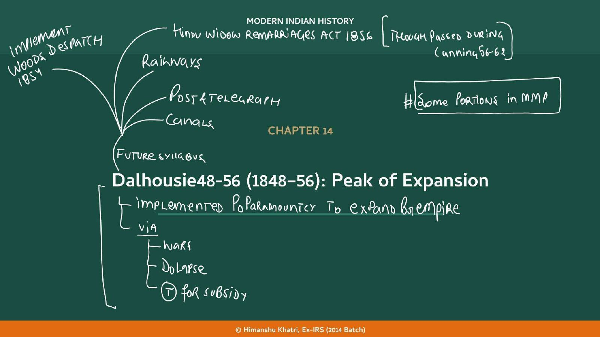
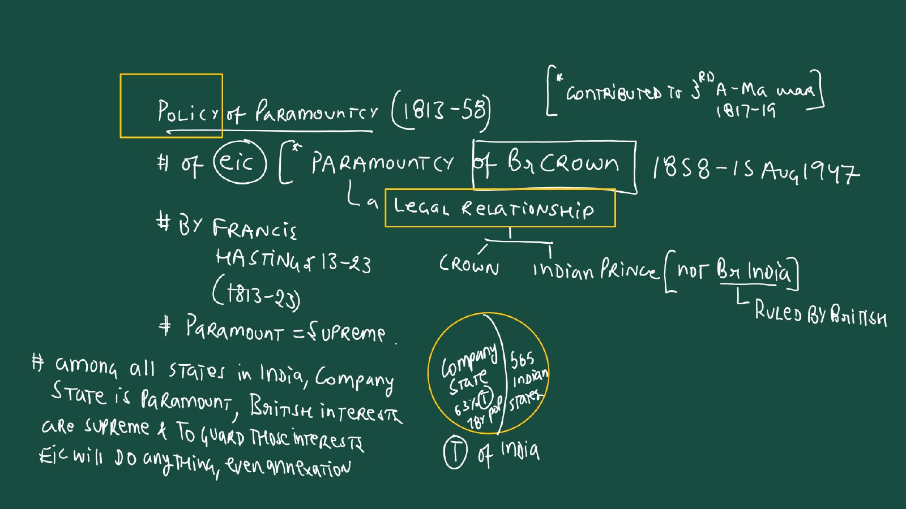
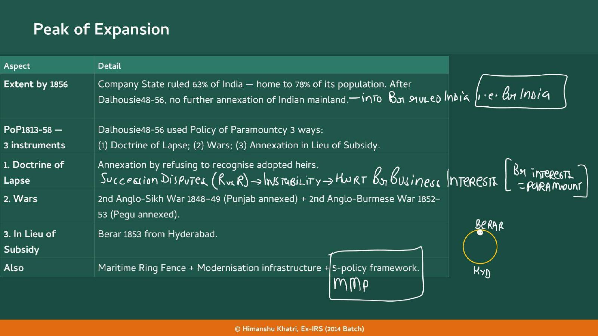
| # | Year | State | Present-day region |
|---|---|---|---|
| 1 | 1848 | Satara | Maharashtra |
| 2 | 1849 | Sambalpur | Odisha |
| 3 | 1849 | Jaitpur | Uttar Pradesh, Bundelkhand region |
| 4 | 1850 | Baghat | Himachal Pradesh: a small hill State near Solan |
| 5 | 1852 | Udaipur | Chhattisgarh (formerly part of the Central Provinces) |
| 6 | 1853-54 | Jhansi | Uttar Pradesh |
| 7 | 1854 | Nagpur | Maharashtra |
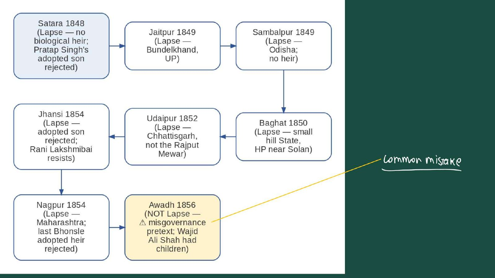
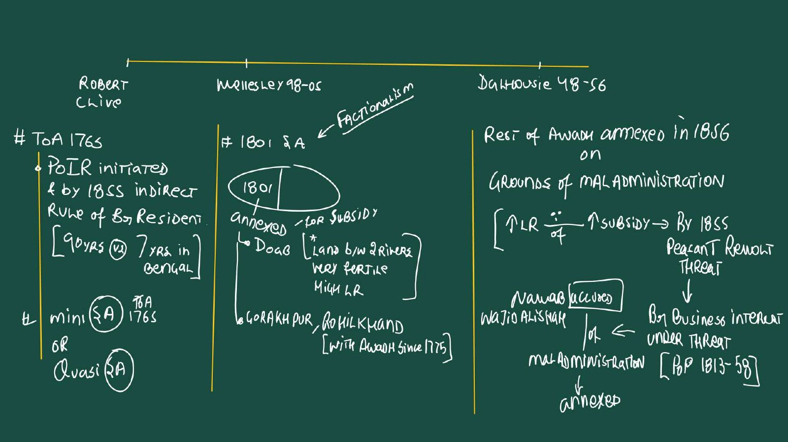
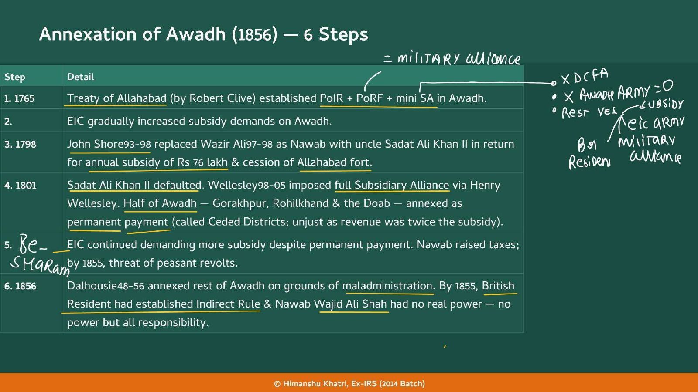
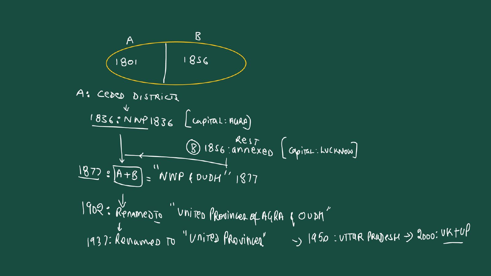
| Year | Administrative status |
|---|---|
| 1801 | Ceded Districts formed from the annexed half of Awadh |
| 1836 | Given full province status as the North-Western Provinces (NWP 1836) (the teacher: capital Agra) |
| 1856 | Rest of Awadh annexed (the teacher: capital Lucknow) |
| 1877 | Both territories reorganised as the "North-Western Provinces and Oudh" |
| 1902 | Renamed "United Provinces of Agra and Oudh" |
| 1937 | Renamed "United Provinces" |
| 1950 | Became Uttar Pradesh after independence |
| 2000 | Uttarakhand carved out of it (the teacher: "UK + UP") |
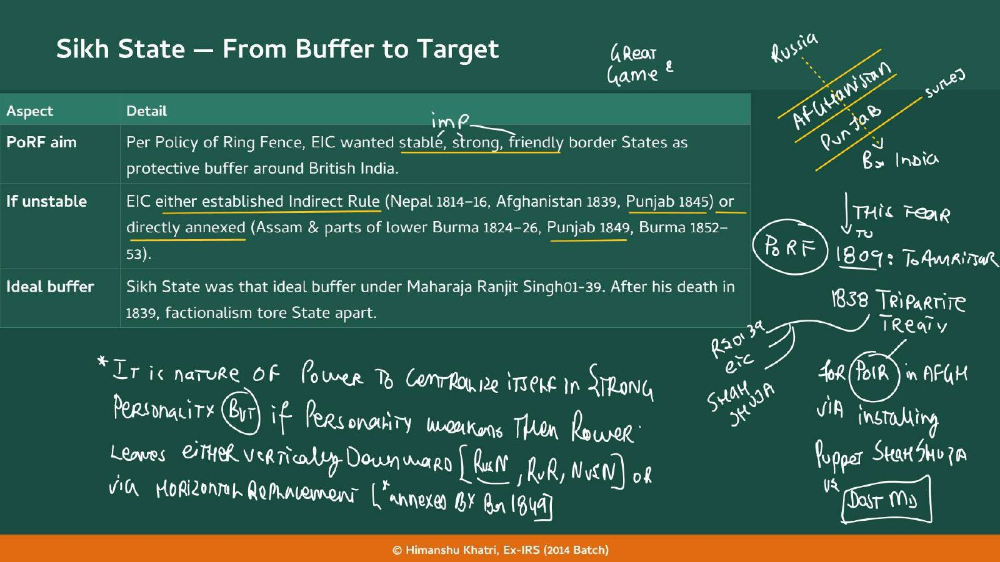
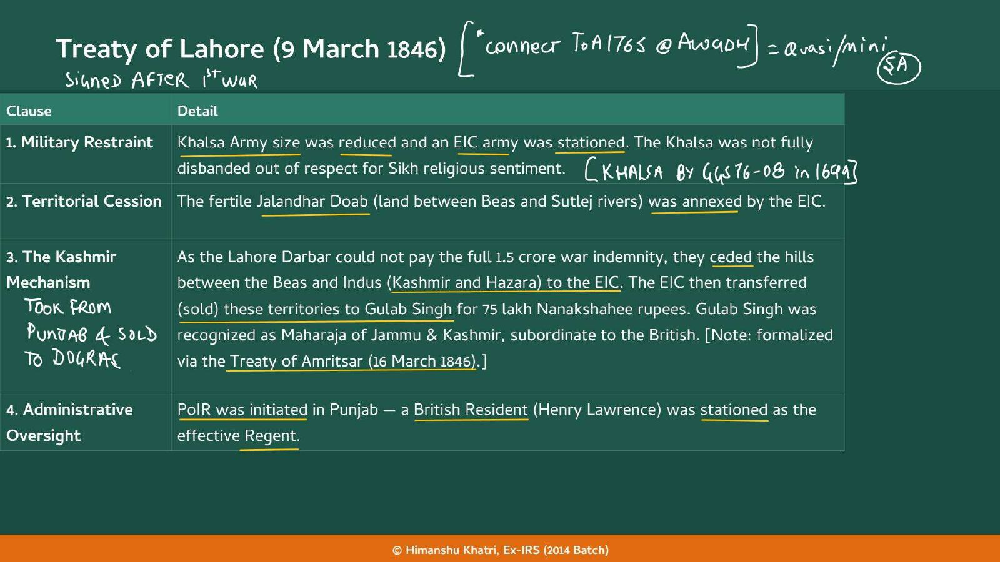
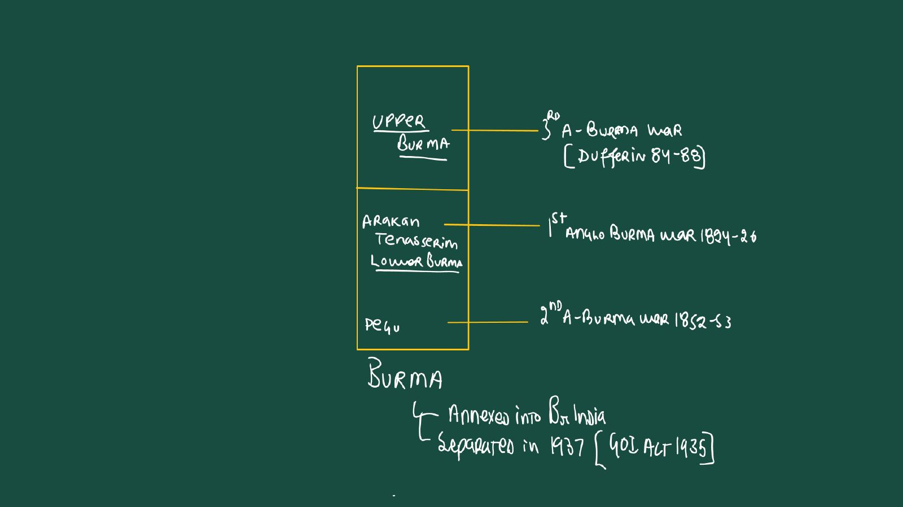
| Part of Burma | War | Dates | Ruler |
|---|---|---|---|
| Arakan, Tenasserim (the rest of "Lower Burma") | 1st Anglo-Burmese War (Treaty of Yandabo 1826) | 1824-26 | not named |
| Pegu | 2nd Anglo-Burmese War | 1852-53 | Dalhousie 48-56 |
| Upper Burma | 3rd Anglo-Burmese War | the board gives no years (see the alert below) | Dufferin 84-88 |
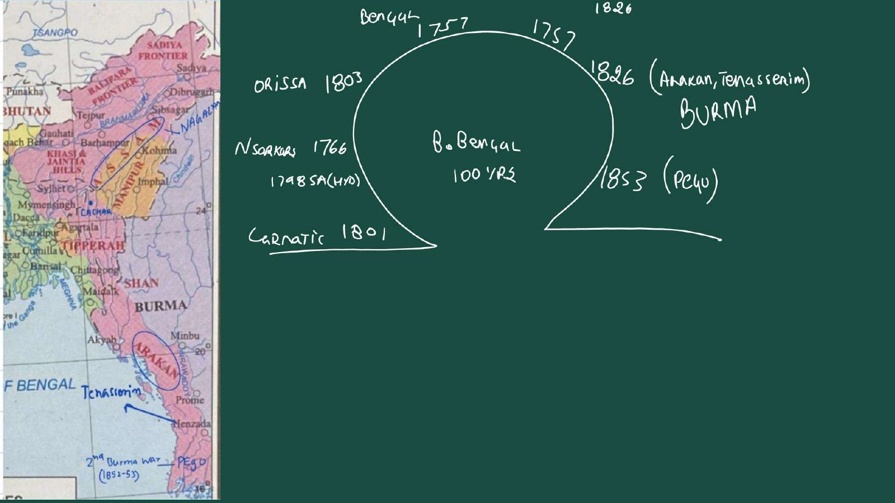
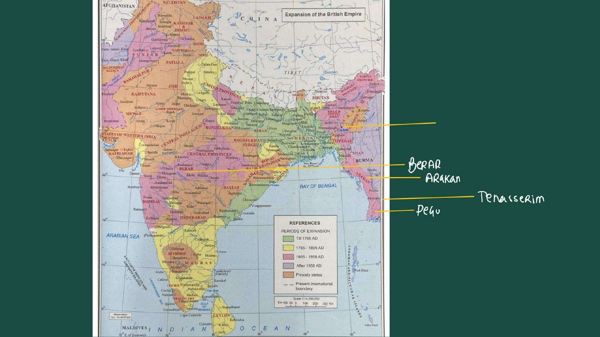
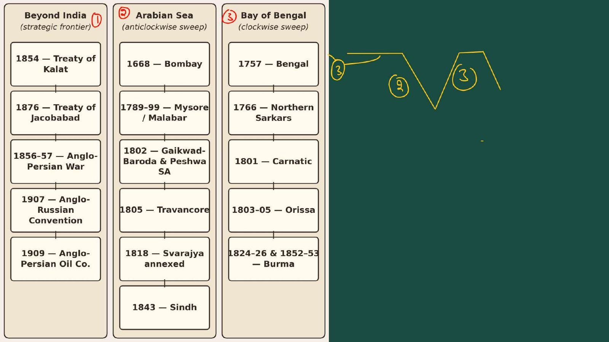
| Sweep | Coastal steps in order |
|---|---|
| Bay of Bengal (clockwise sweep) | 1757 Bengal, 1766 Northern Sarkars, 1801 Carnatic, 1803-05 Orissa, 1824-26 and 1852-53 Burma |
| Arabian Sea (anticlockwise sweep) | 1668 Bombay, 1789-99 Mysore / Malabar, 1802 Gaikwad-Baroda and Peshwa SA, 1805 Travancore, 1818 Svarajya annexed, 1843 Sindh |
| Beyond India (strategic frontier) | 1854 Treaty of Kalat, 1876 Treaty of Jacobabad, 1856-57 Anglo-Persian War, 1907 Anglo-Russian Convention, 1909 Anglo-Persian Oil Co. |
| Treaty | Signed by | Negotiated by | Terms |
|---|---|---|---|
| Treaty of Kalat (1854) | The EIC, under Dalhousie 48-56 | Major John Jacob | The Khan of Kalat surrendered foreign policy and allowed EIC military outposts inside Kalat; in exchange the EIC paid the Khan an annual subsidy of Rs 50,000. A reverse-SA pattern: the imperial power pays the local ruler for special rights to an external power |
| Treaty of Jacobabad (1876) | The British State (the Crown) | Robert Sandeman, under Viceroy Lytton 76-80 | By 1876 the Government of India Act 1858 had abolished the EIC. This treaty ran under the Policy of Subordinate Union (1858-1947), not the EIC's PoP. It went further: the British State could station troops permanently in Kalat, build railways and telegraphs through it and act as supreme arbitrator between the Khan and his tribal chiefs (Sardars) |
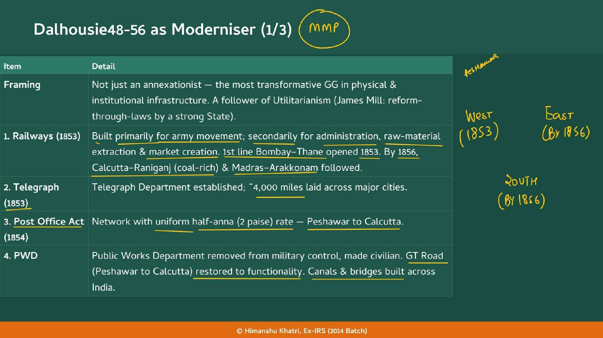
| # | Item | What to remember |
|---|---|---|
| 1 | Railways (1853) | Built primarily for army movement, secondarily for administration, raw-material extraction and market creation. First line: Bombay to Thane, opened 1853. By 1856: Calcutta-Raniganj (coal-rich) and Madras-Arakkonam. The teacher's board: West (1853), East (by 1856), South (by 1856) |
| 2 | Telegraph (1853) | Telegraph Department established; about 4,000 miles laid across major cities |
| 3 | Post Office Act (1854) | A network with a uniform half-anna (2 paise) rate from Peshawar to Calcutta |
| 4 | Public Works Department (PWD) | Removed from military control, made civilian. GT Road (Peshawar to Calcutta) restored to functionality. Canals and bridges built across India |
| 5 | Wood's Despatch (1854) | Sometimes called the "Magna Carta of Indian Education": a blueprint for mass education: vernacular elementary schools, universities, structured education administration. Dalhousie 48-56 supported and implemented it |
| 6 | Vernacular push | Favoured vernacular elementary schools for their utilitarian value, expanding them in Bengal and Bihar. Backed technical education: the goal was efficient labour, good consumers and cheaper administration |
| 7 | Female education | J.E. Drinkwater Bethune (Law Member of Dalhousie 48-56's Council) opened a girls' school in Calcutta in 1849: the Bethune School, India's first successful secular school for girls. (Savitribai and Jyotirao Phule's Pune school, 1 January 1848, predates it as India's first girls' school overall; secular = completely free from religious instruction) |
| 8 | Widow remarriage | Dalhousie 48-56 supported Ishwar Chandra Vidyasagar's work on girls' education and the Hindu Widow Remarriage Act 1856. Vidyasagar became Principal of Sanskrit College in 1851 and Inspector of Schools in 1856, both under Dalhousie 48-56's tenure |
| 9 | Universities | Groundwork through Wood's Despatch, but Dalhousie 48-56 left India in 1856. The three universities (Bombay, Madras, Calcutta) were officially established in 1857 under Canning 56-62. Also the Engineering College at Roorkee; a Director of Education at the Provincial level with an Inspector at the District level |
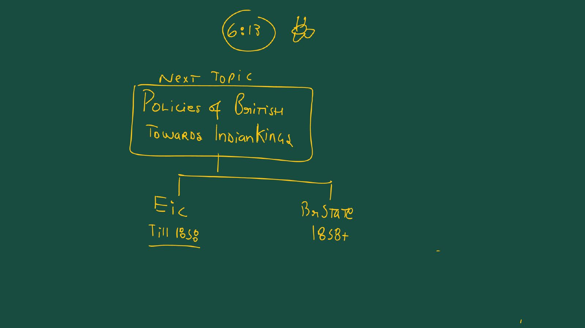
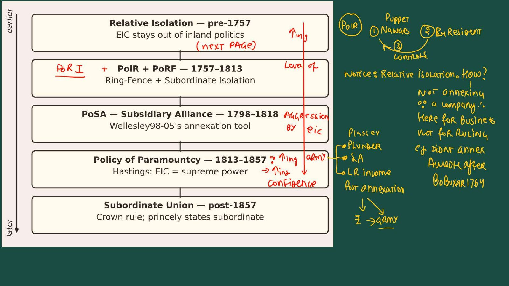
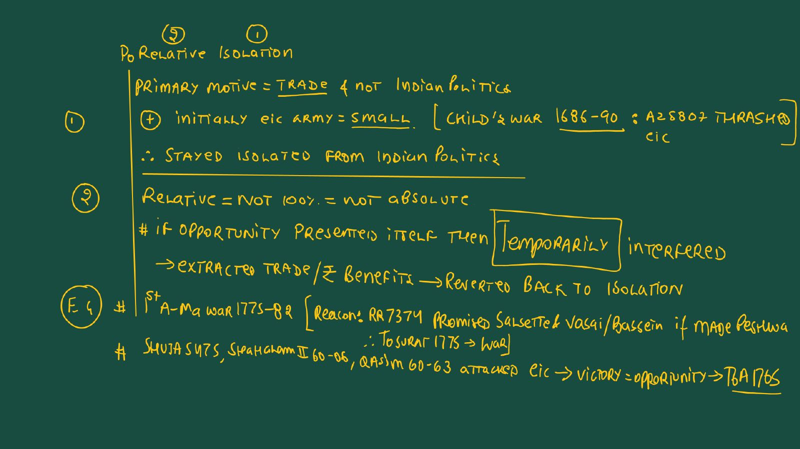
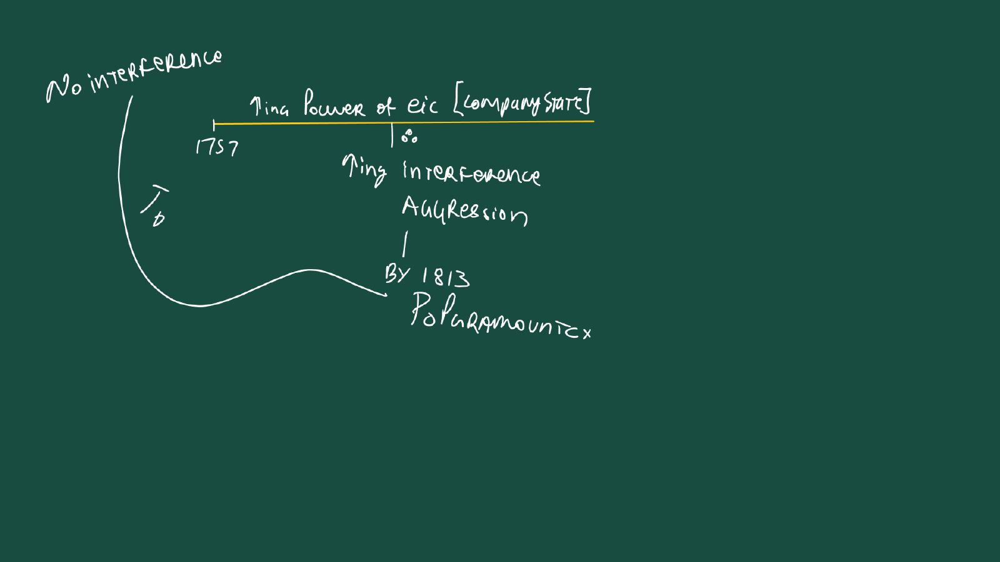
| Policy | Definition | Examples |
|---|---|---|
| PoIR (Indirect Rule) | A British Resident in the court controlling administration without formal annexation | Bengal by 1772, Delhi 1803, Travancore by 1809, Satara by 1818, Punjab 1846, Awadh by 1855 |
| PoRF (Ring Fence) | A military alliance with a frontier State as a buffer against external threats | Awadh (ToA 1765), Hyderabad (Treaty of Hyderabad 1766), Mysore (Treaty of Madras 1769), Marathas (Treaty of Salbai 1782), Sikh (Treaty of Amritsar 1809) |
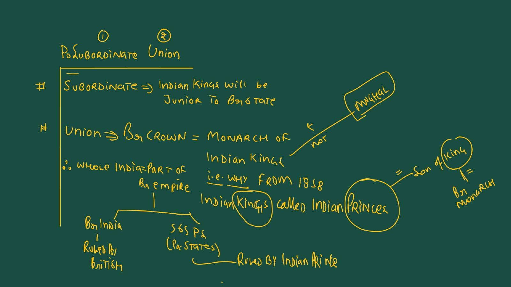
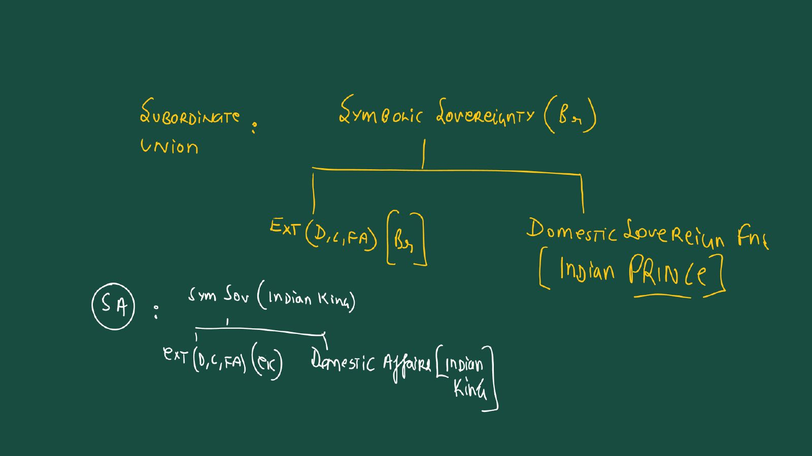
| Leader | Grievance |
|---|---|
| Rani Lakshmibai of Jhansi | Lapse 1854 (Section 3) |
| Nana Sahib | Bajirao II 96-18's pension refused, 1851 (Section 5) |
| Bahadur Shah Zafar 37-57 | The last Mughal, whose titular dignity Dalhousie 48-56 sought to end |
| Year | What happened |
|---|---|
| 1600 | The arc begins: a trading company that wanted to be left alone |
| 1668 | Bombay: the start of the Arabian Sea sweep |
| 1686 | Child's War 1686-90: the EIC's army is small and thrashed |
| 1757 | Bengal: start of the Bay of Bengal sweep |
| 1765 | Treaty of Allahabad: PoIR, PoRF and mini SA in Awadh; a military alliance partner ★ |
| 1766 | Northern Sarkars; Treaty of Hyderabad (PoRF) |
| 1769 | Treaty of Madras with Mysore (PoRF) |
| 1775 | Treaty of Surat; the 1st Anglo-Maratha War begins (to 1782) |
| 1776 | Treaty of Purandhar: Hastings 73-85 wants to settle commercially |
| 1782 | Treaty of Salbai (alliance and PoRF with the Marathas) |
| 1783 | The Khan of Kalat gifts Gwadar to a prince of Oman |
| 1798 | Hyderabad signs the first Subsidiary Alliance; John Shore 93-98 puts Sadat Ali Khan II on the Awadh throne (Rs 76 lakh, Allahabad fort); PoSA begins ★ |
| 1801 | Full SA with Awadh by Wellesley 98-05; half of Awadh annexed (Ceded Districts); Carnatic ★ |
| 1802 | Treaty of Bassein: Bajirao II 96-18 signs the SA; Gaikwad-Baroda and Peshwa SA |
| 1803 | Delhi under PoIR; Orissa |
| 1805 | Travancore |
| 1809 | Treaty of Amritsar between Ranjit Singh 01-39 and the EIC: the Sutlej boundary |
| 1813 | Policy of Paramountcy begins under Francis Hastings 13-23 ★ |
| 1814 | Nepal under Indirect Rule (1814-16) |
| 1816 | The teacher's note beside Nagpur: 1816 alliance |
| 1817 | 3rd Anglo-Maratha War (1817-19) |
| 1818 | Satara under PoIR; Svarajya annexed |
| 1819 | Bajirao II 96-18 pensioned off at Bithur |
| 1824 | 1st Anglo-Burmese War (to 1826); Treaty of Yandabo 1826 |
| 1836 | NWP formed from the Ceded Districts |
| 1838 | Tripartite Treaty: Shah Shuja against Dost Md |
| 1839 | Ranjit Singh 01-39 dies; Sikh State torn by factions; Afghanistan under Indirect Rule |
| 1843 | Sindh annexed by Charles Napier under Ellenborough 42-44; Duleep Singh 43-49 becomes Maharaja |
| 1845 | Punjab under Indirect Rule (the slide's date) |
| 1846 | 9 March: Treaty of Lahore; 16 March: Treaty of Amritsar (Kashmir sold to Gulab Singh) ★ |
| 1847 | The Court of Directors formulates the Doctrine of Lapse ★ |
| 1848 | Satara annexed (first Lapse State); 2nd Anglo-Sikh War begins (to 1849) ★ |
| 1849 | Punjab annexed, Koh-i-Noor surrendered; Sambalpur and Jaitpur by Lapse; Bethune School opens in Calcutta ★ |
| 1850 | Baghat annexed by Lapse |
| 1851 | Bajirao II 96-18 dies; pension refused to Nana Sahib; Vidyasagar Principal of Sanskrit College |
| 1852 | Inam Commission; Udaipur (Chhattisgarh) annexed; 2nd Anglo-Burmese War begins ★ |
| 1853 | Berar annexed from Hyderabad; first railway (Bombay-Thane); Telegraph Department; 2nd Anglo-Burmese War ends (Pegu); Jhansi annexed (1853-54) ★ |
| 1854 | Nagpur and Jhansi by Lapse; Post Office Act; Wood's Despatch; Treaty of Kalat ★ |
| 1855 | Awadh under a Resident: Indirect Rule; threat of peasant revolts |
| 1856 | Awadh annexed on misgovernance; Dalhousie 48-56 leaves, Canning 56-62 takes over; Hindu Widow Remarriage Act; Anglo-Persian War (to 1857); Vidyasagar Inspector of Schools ★ |
| 1857 | The Revolt; Treaty of Paris; the three universities established under Canning 56-62 ★ |
| 1858 | Government of India Act; Queen Victoria's Proclamation ends Lapse; Subordinate Union begins ★ |
| 1876 | Treaty of Jacobabad under Lytton 76-80 |
| 1877 | North-Western Provinces and Oudh |
| 1902 | United Provinces of Agra and Oudh |
| 1907 | Anglo-Russian Convention |
| 1909 | Anglo-Persian Oil Company |
| 1937 | United Provinces; Burma separated |
| 1947 | Subordinate Union ends (15 August) |
| 1950 | Uttar Pradesh |
| 1958 | Pakistan purchases Gwadar from Oman |
| 2000 | Uttarakhand carved out of Uttar Pradesh |
ToA 1765 at Awadh is step 1 of Awadh's fall; PoIR, PoRF and the mini SA were Clive 57-67's toolkit; "relative isolation" uses Buxar as its opportunity.
Hyderabad 1798 and Awadh 1801 are the SA moves that Berar 1853 and Awadh 1856 complete; PoSA is step 3 of the arc.
Mysore (Treaty of Madras 1769) as PoRF; Travancore 1805, Carnatic 1801 and Mysore/Malabar on the Arabian Sea and Bay sweeps.
Surat 1775, Purandhar 1776, Salbai 1782, Bassein 1802 and the 3rd war 1817 are the arc's treaties; Satara (Pratap Singh 39-63) and Nagpur's Lapse annexations; Bajirao II 96-18's pension and Nana Sahib.
Ranjit Singh 01-39, the Khalsa and the Sikh factions that Section 8 uses.
Opens with the ideas (Orientalism, Liberalism, Utilitarianism, racism) behind the policies of this chapter; Dufferin 84-88's Upper Burma (1886) is in that chapter's index.
Wood's Despatch 1854, Bethune School, Vidyasagar and the Hindu Widow Remarriage Act 1856.
Lakshmibai, Nana Sahib, Zafar and the Awadh court as annexation-aggrieved leaders.
The Regulating Act 1773 GG, Charter Act 1833 GG and Government of India Act 1858 in the Prelims 1996 match.
Read the question, answer in your head, then tap to check.
| What are the three instruments of Paramountcy used by Dalhousie 48-56? | Doctrine of Lapse; Wars (2nd Anglo-Sikh 1848-49, Punjab; 2nd Anglo-Burmese 1852-53, Pegu); Annexation in lieu of subsidy (Berar 1853). |
| How much of India did the Company State hold by 1856? | 63% of the territory and 78% of the population; no further annexations after Dalhousie 48-56. |
| Who formulated the Doctrine of Lapse and when? | The Court of Directors of the EIC (Board of Directors, not a Government body) in 1847; Dalhousie 48-56 implemented it. The teacher marked this Prelims. |
| What did the Doctrine of Lapse override? | Hindu law's recognition of adoption: adopted sons inherited with full legitimacy; the Doctrine said no biological heir meant the rights lapsed (rights to rule and to pension). |
| List the seven Lapse States with years. | Satara 1848, Sambalpur 1849, Jaitpur 1849, Baghat 1850, Udaipur 1852, Jhansi 1853-54, Nagpur 1854. |
| Which Udaipur was annexed by Lapse in 1852? | A small State in present-day Chhattisgarh (then Central Provinces), not the Rajput Mewar. |
| What was the Inam Commission? | Set up 1852 in the Bombay Presidency to investigate tax-free inams to Brahmins and temples; proof of title demanded; about 20,000 estates seized. Lapse applied to land titles. |
| Why did the pension of Nana Sahib stop? | Peshwa Bajirao II 96-18 died in 1851; his Rs 8 lakh pension was refused to adopted son Nana Sahib (adopted sons inherit private wealth, not titles or pensions); Nana Sahib led at Bithur in 1857. |
| How was Berar annexed? | In 1853, as permanent payment of Hyderabad's unpaid subsidy (Hyderabad signed the first SA in 1798). Parallel: half of Awadh in 1801. |
| Why was Awadh 1856 not a Lapse annexation? | Wajid Ali Shah had heirs; Awadh was annexed on grounds of maladministration (Prelims 2008). By 1855 the Resident had set up Indirect Rule: the Nawab had no power but all responsibility. |
| Awadh's six steps in one line. | 1765 ToA mini SA, PoIR, PoRF; more subsidy; 1798 Shore 93-98 puts Sadat Ali Khan II (Rs 76 lakh, Allahabad fort); 1801 Wellesley 98-05 takes half (Ceded Districts); more demands and a tax rise; 1856 Dalhousie 48-56 takes the rest. |
| What were the Ceded Districts? | The half of Awadh (Gorakhpur, Rohilkhand and the Doab) annexed in 1801 as permanent payment of subsidy; unjust as the revenue was twice the subsidy. |
| How did Awadh's territory get renamed over time? | 1836 NWP (Agra); 1877 NWP and Oudh; 1902 United Provinces of Agra and Oudh; 1937 United Provinces; 1950 Uttar Pradesh; 2000 Uttarakhand carved out. |
| Why did the EIC care about stable border States? | PoRF: stable, strong, friendly States as a buffer around British India (the teacher: imp). If not stable: Indirect Rule (Nepal 1814-16, Afghanistan 1839, Punjab 1845) or annexation (Assam and lower Burma 1824-26, Punjab 1849, Burma 1852-53). |
| What broke the Sikh State after 1839? | Four factions: royal family members, the Sindhanwaliyas (a Jat clan or misl), Dogra Rajputs as Wazirs, and the Khalsa Army (democratic, Panchayat-style). Ranjit Singh 01-39 had died. |
| Four clauses of the Treaty of Lahore (9 March 1846)? | Military restraint (Khalsa reduced, EIC army stationed); Jalandhar Doab annexed; Kashmir mechanism (Rs 1.5 crore unpaid, hills ceded, sold to Gulab Singh for 75 lakh); Resident Henry Lawrence as Regent (PoIR). |
| Two Treaties of Amritsar? | 1809: Ranjit Singh 01-39 and the EIC, the Sutlej as boundary. 16 March 1846: formalised the Kashmir sale to Gulab Singh, legal foundation of the Princely State of J&K. |
| What happened in the 2nd Anglo-Sikh War 1848-49? | Mulraj (Multan) and Chattar Singh (Haripur) revolted; Punjab annexed from Duleep Singh 43-49 (child of 5); Koh-i-Noor to the Crown; Board of Administration (Lawrence Brothers and Charles Mansel). |
| Which parts of Burma fell in which war? | Arakan and Tenasserim: 1st war 1824-26 (Yandabo 1826); Pegu: 2nd war 1852-53 (Dalhousie 48-56); Upper Burma: 3rd war (Dufferin 84-88). Burma separated 1937. |
| Who annexed Sindh and when? | Charles Napier, 1843, under Ellenborough 42-44; not Dalhousie 48-56. |
| Kalat 1854 against Jacobabad 1876? | 1854: EIC, Major John Jacob, Dalhousie 48-56, Khan gives foreign policy and outposts, paid Rs 50,000 a year (reverse SA). 1876: British State, Robert Sandeman, Lytton 76-80, permanent troops, railways, telegraphs, arbitrator over Sardars. |
| What is special about Gwadar? | An Omani enclave from 1783 (gifted by the Khan of Kalat) for over 170 years; the British never owned it; Pakistan bought it in 1958; now at the heart of CPEC. |
| How did Britain control Persia without annexing it? | Force 1856-57 (Bushehr, Kharg; Treaty of Paris 1857, Herat claim given up); spheres of influence 1907 (Anglo-Russian Convention); economic control 1909 (Anglo-Persian Oil Company, later BP). |
| List Dalhousie 48-56's infrastructure moves. | Railways 1853 (Bombay-Thane; then Calcutta-Raniganj, Madras-Arakkonam), Telegraph 1853 (4,000 miles), Post Office Act 1854 (half-anna), PWD civilian, GT Road, canals, Wood's Despatch 1854, groundwork of the three universities (1857). |
| Who was Bethune and what did he open? | J.E. Drinkwater Bethune, Law Member of Dalhousie 48-56's Council, opened the Bethune School in Calcutta in 1849: the first successful secular school for girls; the Phules' Pune school (1 Jan 1848) was earlier overall. |
| Why was the Hindu Widow Remarriage Act 1856 not Dalhousie 48-56's? | The teacher's bracket: passed during Canning 56-62. Dalhousie 48-56 supported Vidyasagar's work (Principal of Sanskrit College 1851, Inspector of Schools 1856). |
| Mains 2013: "In many ways, Lord Dalhousie 48-56 was the founder of modern India." Elaborate. (Skeleton) | Intro: infrastructure built for colonial ends outlasted them. Body: railways 1853, telegraph 1853, Post Office Act 1854, PWD and GT Road, Wood's Despatch 1854, universities (1857, groundwork his). Closing: the colonial skeleton became the bones of the nation; strongest anchor Wood's Despatch. |
| Practice Mains: Discuss the role of the Doctrine of Lapse in fuelling the 1857 revolt. (Skeleton) | Intro: Lapse refused Hindu adoption and annexed 7 States 1848-54. Body: Jhansi and Nagpur flashpoints; Nana Sahib's pension (1851); Zafar's dignity; Awadh court, talukdars, inam-holders (Inam Commission 1852). Closing: annexation-aggrieved leaders formed the spine of 1857; the Queen's Proclamation 1858 ended Lapse. |
| Relative Isolation: what does "relative" mean? | Not 100%: the EIC's primary motive was trade; it interfered temporarily when an opportunity arose (1st Anglo-Maratha War 1775-82, Buxar giving ToA 1765), took the benefit and reverted to isolation. |
| PoIR versus PoRF? | PoIR: a British Resident controls the administration without annexation (Bengal 1772, Delhi 1803, Travancore 1809, Satara 1818, Punjab 1846, Awadh 1855). PoRF: military alliance with a frontier State as a buffer (Awadh 1765, Hyderabad 1766, Mysore 1769, Marathas 1782, Sikh 1809). |
| What is Paramountcy (1813-58) in one formula? | Subsidiary Alliance minus the rights of the Indian State; initiated by Francis Hastings 13-23; every State sealed off, the EIC as gatekeeper. |
| What is Subordinate Union (1858-1947) in one formula? | Paramountcy plus sovereignty formally with the British Crown; Indian rulers become Princes; D, C, FA with the Crown, domestic functions with the Prince; 565 princely States. |
| Why did the policy phases in the slide flowchart and handout differ? | Flowchart: isolation pre-1757, PoIR+PoRF 1757-1813, PoSA 1798-1818, Paramountcy 1813-1857. Handout: isolation until 1813, PoSA 1798-1858, Paramountcy 1813-58. Use the handout and teacher. |
| Which 1857 leaders were annexation-aggrieved? | Lakshmibai (Jhansi Lapse 1854), Nana Sahib (pension 1851), Bahadur Shah Zafar 37-57 (titular dignity), plus the Awadh court, disbanded Sikh soldiers, talukdars and inam-holders. |
| What happened in 1858 to Lapse? | The Government of India Act 1858 abolished the Company State; Queen Victoria's Proclamation formally ended the Doctrine of Lapse and pledged respect for treaties; no more annexations followed. |
Tap the card to flip.